Original
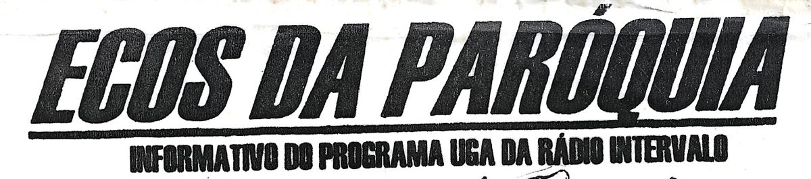
Edições 01 a 04 · livro animado
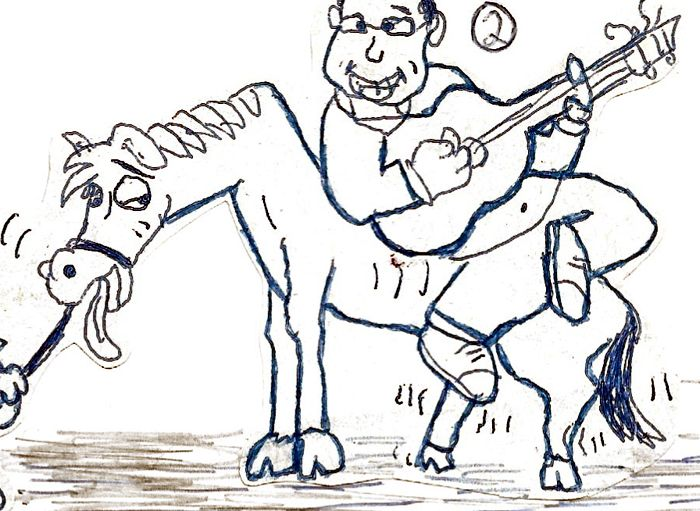
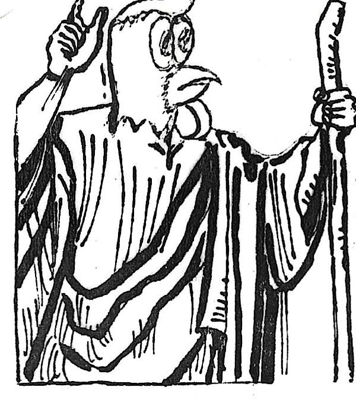
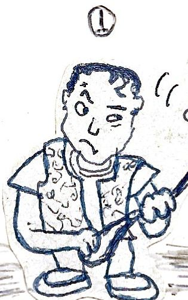
Todos os sábados ,a partir das 9: 00 !!!!!!!!!!!!!!
Rádio Intervalo · Programa UGA
Os textos são os originais dos jornais. Clique em um personagem para ouvir o que ele tem a dizer. Vire as páginas pelas setas, pelas bordas das folhas ou arrastando o dedo.
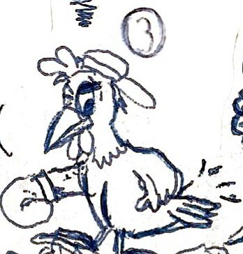
Nesta edição começaremos a apresentar todos os ‘elementos’ que participam da Ràdio Intervalo . Para abrir com chave de ouro, vamos conhecer os ‘chefes’ e os locutores do programa UGA.
-1- Elvis- é o gnomo da sorte do programa. Sua baixa estatura é compensada pelo seu descomunal talento como DJ.
-2-Carlos- garoto propaganda da Herbalife. Locutor e violeiro oficial do programa.
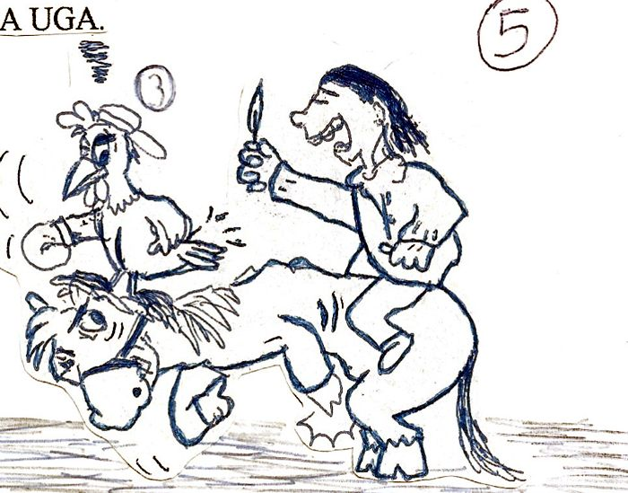
-3-Rafael- conhecido também pelo vulgo de Galinha, é o sex simbol da Rádio Intervalo.
-4-Anderson e -5-Paulo- são os indivíduos que ocupam a posição mais alta na hierarquia dos arcanos maiores da Rádio Intervalo . São os nossos queridos e estimados chefes.
-6- André Pila- é um locutor internacional. Paraguaio naturalizado brasileiro,com passagem pela Rádio Guarani de Ciudad del Este.
-7- Guará, o barbaro- além de comentarista esportivo é o diretor de ciências ocultas do programa.
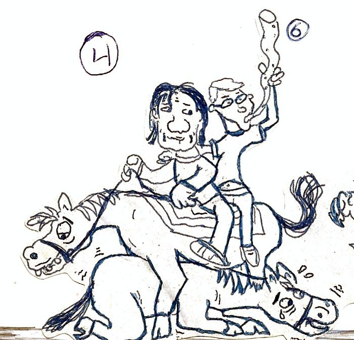
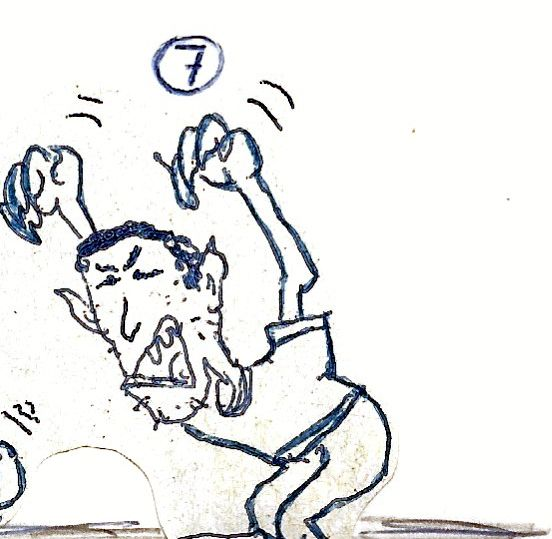
Sugiro que vocês sejam mais homens! Porque os ςΙΑΔΟΣ que ficam falando no sábado são todos ΒΙΧΗΑΣ. Sugiro que estes seres sejam executados na arena. Sugiro também que seja cortada a língua daquele cara que imita o Cadeia. -Gostaria de tirar uma foto erótica com o Galinha.
CLÓVIS
Caríssimo colega, estamos comovidos com tantos elogios!!!! Sobre a foto erótica com o Galinha,pode vir buscar a sua aqui na rádio. Ela vem autografada e mostra o Galinha com sua sunga asa delta tigrada!! Por falar no assunto, existe um movimento gigantesco de mulheres atrás da tão desejada foto. O galináceo promete atender todos os pedidos na medida do possível!!!
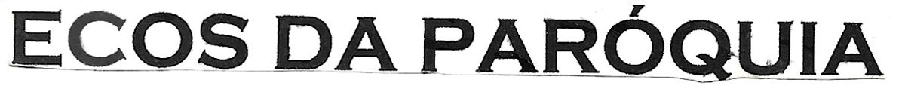
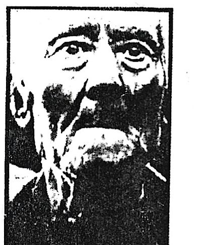
Caríssimos colegas, estamos começando a partir desta edição uma série de informativos inúteis, sobre o programa Uga Alegria. Este abominável programa tem como principais atrações os noticiários policiais e esportivos, com os destaques da semana. Contamos também com os noticiários esotéricos, programa de cartas dos alunos, fora as músicas mais ridículas de toda programação. Mas na verdade, o ponto forte do programa são os locutores, que sem dúvida são os melhores e mais bonitos da região.
Avisamos aos estudantes que o programa Uga Alegria está aberto para qualquer recado que vocês quiserem. Podem mandar cartas de amor ( para os locutores do programa, de preferência ), pedidos de música, recados, anúncios, orações de agradecimentos, etc.
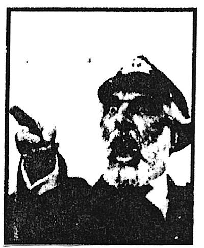
Todas as cartas mandadas para a rádio concorrerão à um espetacular dia com os locutores mais eróticos da RÁDIO INTERVALO.
Regulamento: só terão validade as cartas mandadas por mulheres.
PROGRAMAÇÃO:
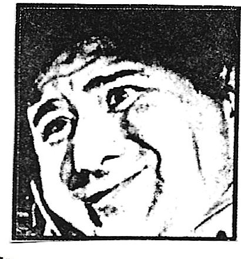
Perguntar não ofende...
Quando que o Grêmio vai organizar uma seleção para jogar contra o Saudoso, Heróico, Bravo e Retumbante time do Poty Esporte Clube?
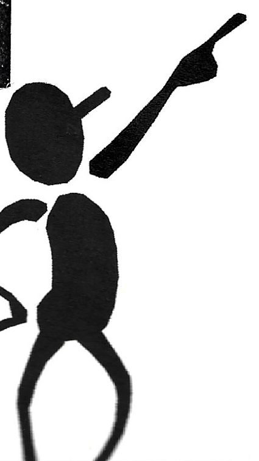
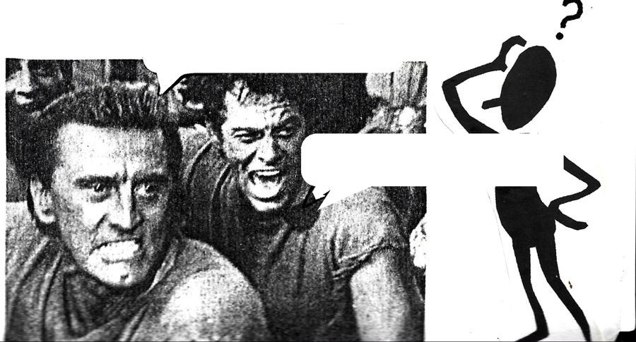
Mas quando eu posso ouvir este programa asqueroso ?
Todos os sábados ,a partir das 9: 00 !!!!!!!!!!!!!!
``O programa UGA é muito interessante e me deixou mais ligado com a natureza ,porque todo o sábado encontro um bando de animais em extinção que me fazem rir e ao mesmo tempo chorar por causa das besteiras que eles falam.”
ASS: DOLLÉ
É uma honra termos este super jornal nesta instituição de ensino . ( Puxa saco !!! ) Apesar do Galinha papa ovo e do Guarani paiacã, o pajé da equipe UGA. E o Pilla é de raça, vira e não vira ele é do meio (????). O Carlos é o garoto propaganda do UGA e nosso drag queen oficial. Eu sou o anão DJ. Minha tarefa é fazer os defeitos especiais do programa.
ASS: ELVIS
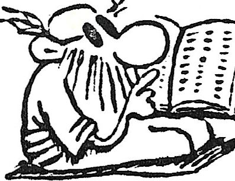
Motivadas pelo último jornal Ecos da Paróquia as alunas do C.E.P estão proporcionando um movimento incrível de cartas e visitas na 'Radio Intervalo'.
`` Não consigo dormir mais com os vários telefonemas para minha residência” confessa desesperado o locutor Pila.
Com certeza a pessoa que sofre mais com os assédios é o locutor Galinha,mas mesmo assim confessa: ``Elas alimentam o meu ego!!! Vou responder todas as cartas na medida do possível.”
Se você também quer deixar o seu recado no jornal Ecos da Paróquia, deposite sua carta nas urnas que estão na cantina e na rádio. Pode mandar anúncios , recados para outras pessoas ,ameaças de morte, orações...
No último sábado recebemos um bilhete que nos deixou muito intrigados. Quando começamos a ler aquele bilhete logo achamos que seria a Mãe Dinán ou Nostradamus que teria escrito. Na verdade foi um aluno do C.E.P que se intitulava ``O Profeta”. Leia a seguir alguns trechos da tão enigmática carta.
``A terceira guerra mundial ocorrerá em 10 de setembro de 1999.O primeiro país a ser destruido será a França, por uma bomba nuclear.”
``Profetas recentes e astrólogos afirmam que o fim do mundo ocorrerá em 5 de maio do ano 2000 os sete planetas do sistema solar se alinharão, um acontecimento extremamente raro.”
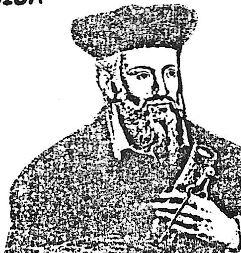
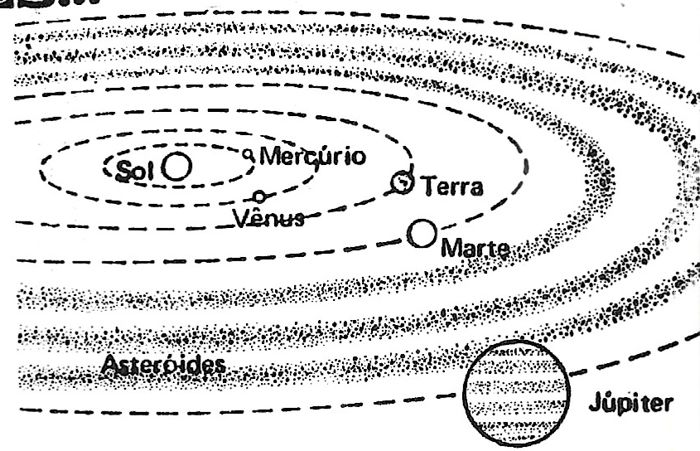
Parte do Sistema Solar
Obs: o Ecos da Paróquia também é cultura!!!!!!!!
Ao contrário de que diz o nosso coleguinha, o número real de planetas que fazem parte do nosso sistema solar é 9!!!fora os 32 satélites e 1 estrela chamada Sol. Apreciamos muito a sua carta e declaramos você como vidente oficial do programa -Seria possível você mandar os números da mega sena da próxima semana???? Contando antecipadamente com sua [...]
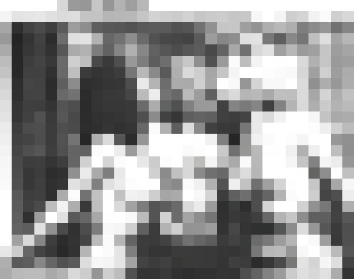
CensuradoNa foto ao lado, o locutor [...]
(o recorte do original termina aqui)
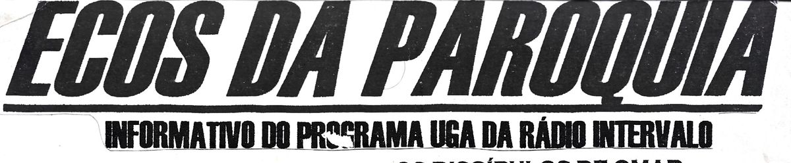
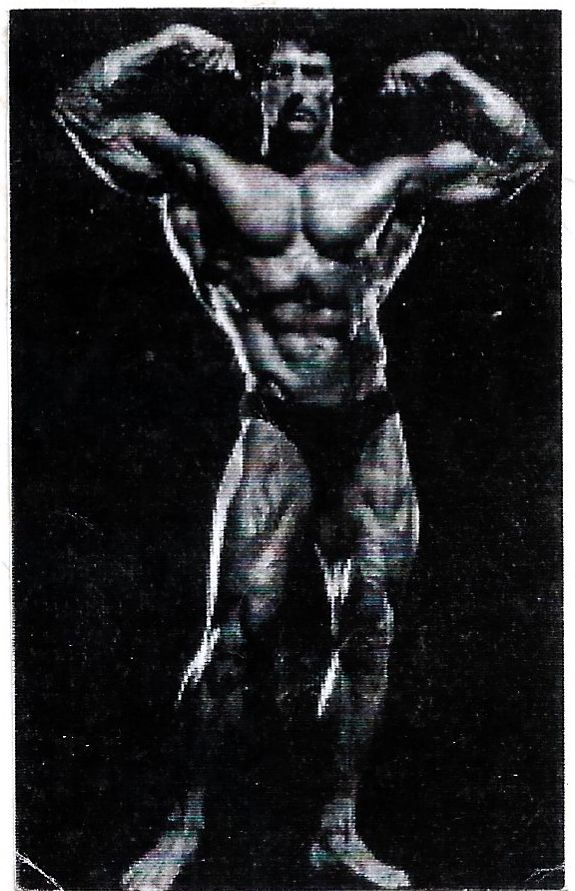
Tem muita gente no Colégio Estadual querendo saber quem é o locutor Galinha. O serviço de informações secretas do programa UGA conseguiu obter os nomes das principais fãs do galináceo.São elas: Vanessa Cardoso e Priscila Bianca da EG-J .O penoso promete visitá-las em breve e manda cordiais e carinhosas saudações.
Galera do TA-A
Luís ,Lorena ,Karina, Janaína e Leandro P.
Vocês são D+. Adivinhem quem é????
A própria: Moleca
Já o pessoal aqui da rádio só manda abraços para a Karina, Janaína, Lorena e também para nossa amiga Moleca. Os outros são todos machos e vão ter que se contentar com nossos votos de alta estima e elevada consideração.
Participe você também do jornal Ecos da Paróquia e do programa UGA da Rádio Intervalo . Pode mandar sugestões e o que mais você quiser!!!.
Minha amiga, você anda cansada, triste e sem esperança?? Preocupada com o futuro??
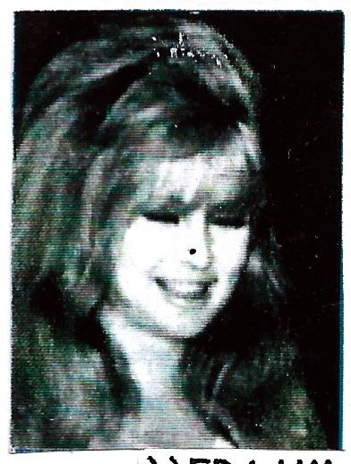
Problemas com amor ,dinheiro ou família?? A solução está nos discípulos de Omar Galinha. Este grupo dedicado às ciências esotéricas está pronto a ajudar você nas questões de sua vida!!!!!!
Depoimentos verdadeiros:
``Era um verdadeiro amigo, sabia tudo de mim” (GERBÁSIA L. M. LIGHTS)
``Eu tinha um olho de vidro, mas depois que consultei o instituto Omar Galinha consegui mais um!!!!!! (GENOVEVO D. M.)
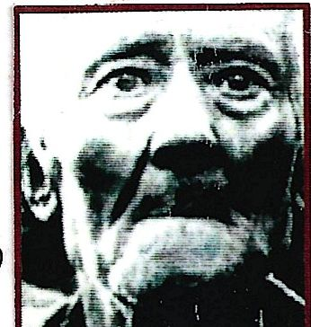
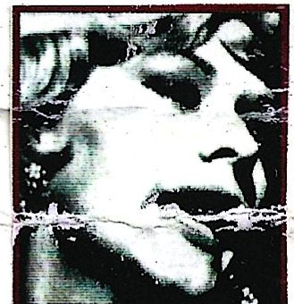
``Eu tinha frieiras nos pés que exalavam odores, mas com a recomendação do talco Omar Galinha isso virou coisa do passado” (ATENOGILDA X. F.)
``Não tomo mais nenhuma decisão em meu escritório sem consultar os discípulos de Omar Galinha” (GODOFREDO L. M.)
Escreva você também para este renomado instituto. A urna está na lanchonete.
1- Cabelo: é um exemplo do locutor que não serve para nada .Sua alergria é encher o saco dos locutores do programa UGA
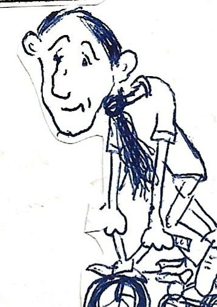
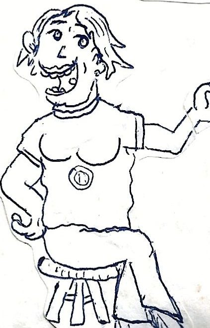
2- Ieda- secretária prestativa mas apresenta traços psicóticos e assassinos, mas no fundo é gente boa!!!
Rádio Intervalo · Programa UGA
Participe você também do jornal Ecos da Paróquia e do programa UGA da Rádio Intervalo . Pode mandar sugestões e o que mais você quiser!!!.
Fim